01 / KNOW WHAT YOU HAVE
Make it yours.
Add each product you own, a photo and its price if you know it. Keep opened dates and your own review dates together.
FinishShelf: Project Pan
A private home for beauty you already own. Log a use, see your progress and enjoy the little finish lines.
Explore the appRead the guideUniversal iPhone + iPad. No account or developer backend.
Not yet approved or available on the App Store.
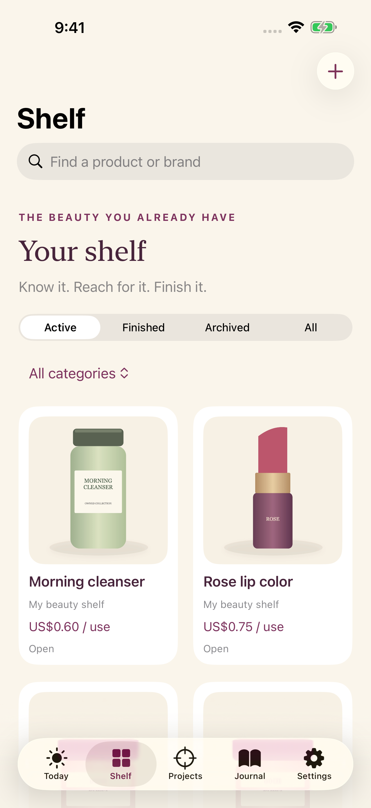
Owned. Used. Finished.
01 / KNOW WHAT YOU HAVE
Add each product you own, a photo and its price if you know it. Keep opened dates and your own review dates together.
02 / REACH FOR IT
Log a use or a dated check-in. Follow remaining amounts, photos and cost per use. Correct an entry when life gets messy.
03 / KEEP THE PROGRESS
Record an empty or declutter, revisit your history and save a monthly card or PDF. Your actual marks tell the story.
Your month, ready to keep
A native PNG card turns your dated uses, empties and marked no-buy days into a quiet record of progress. Names and photos are off until you choose. Private notes always stay out.
This actual app export uses fictional October records: 84 dated uses, 2 empties and 14 qualifying no-buy days. Unmarked days stay unknown.
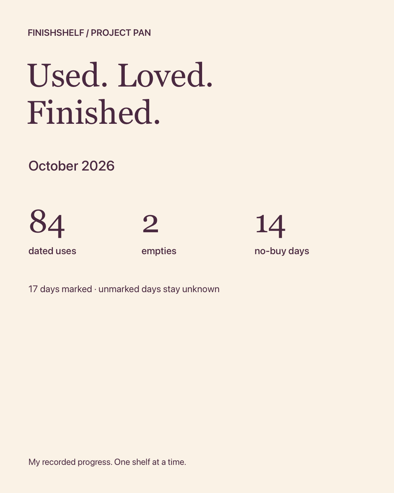
Made for your iPhone
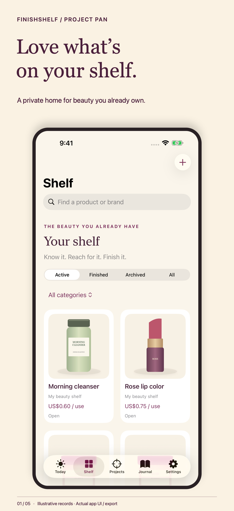
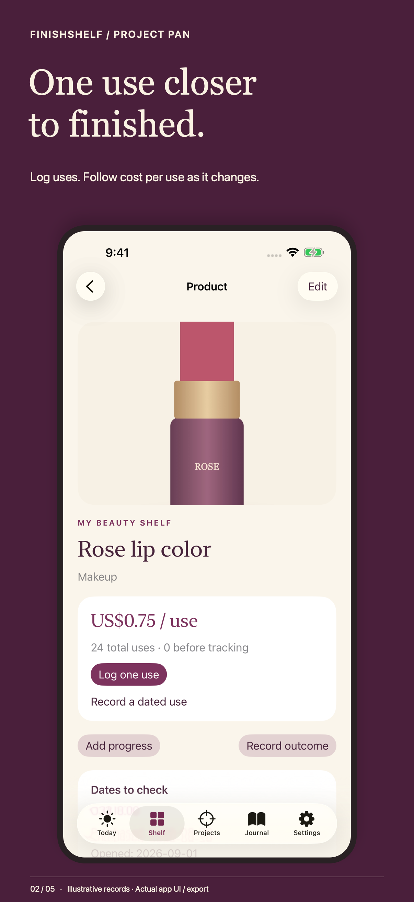
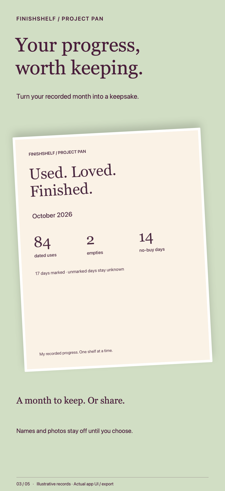
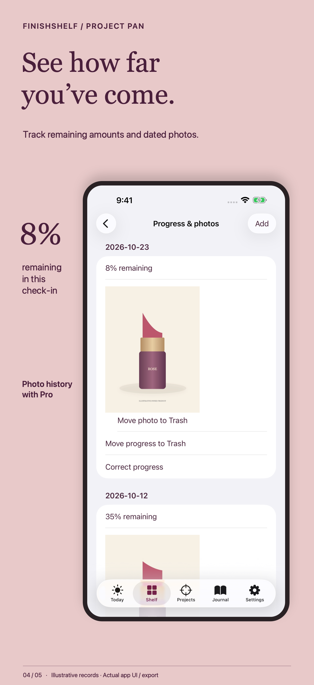
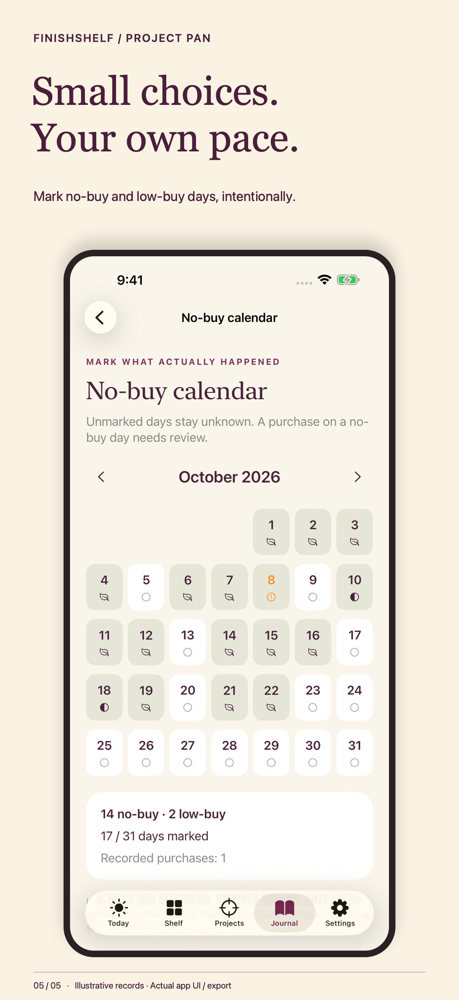
Actual native UI and exports. All product records and original product illustrations are fictional. Additional photo history requires Pro.
Room to reflect on iPad
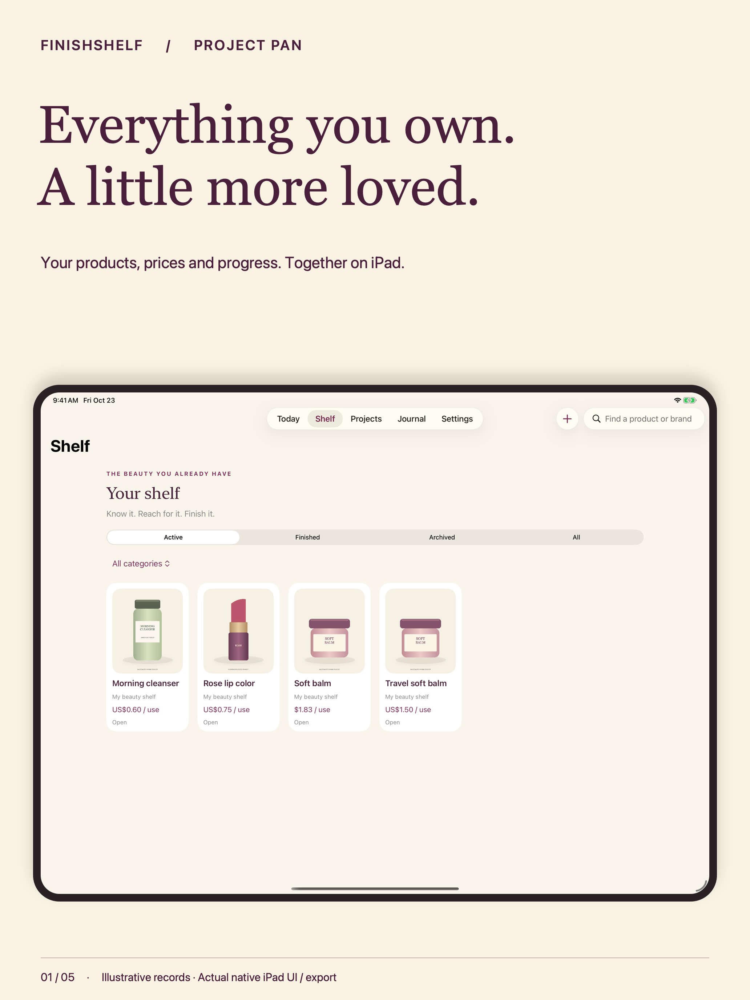
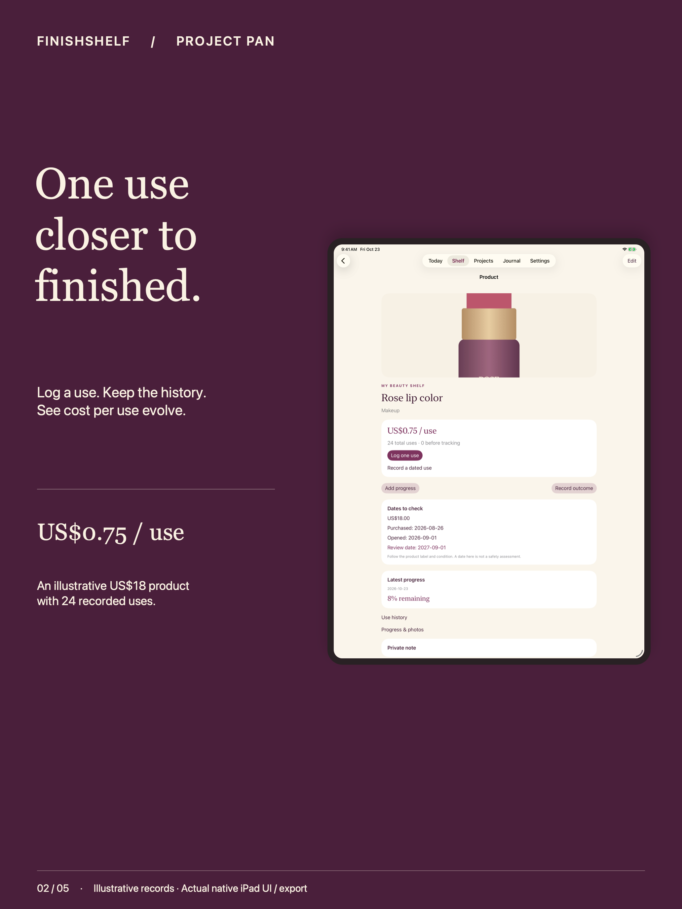
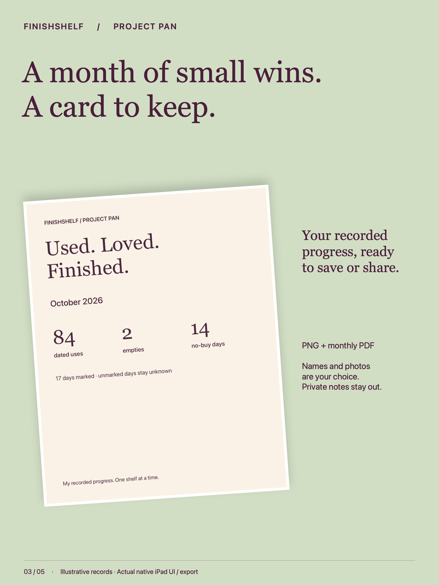
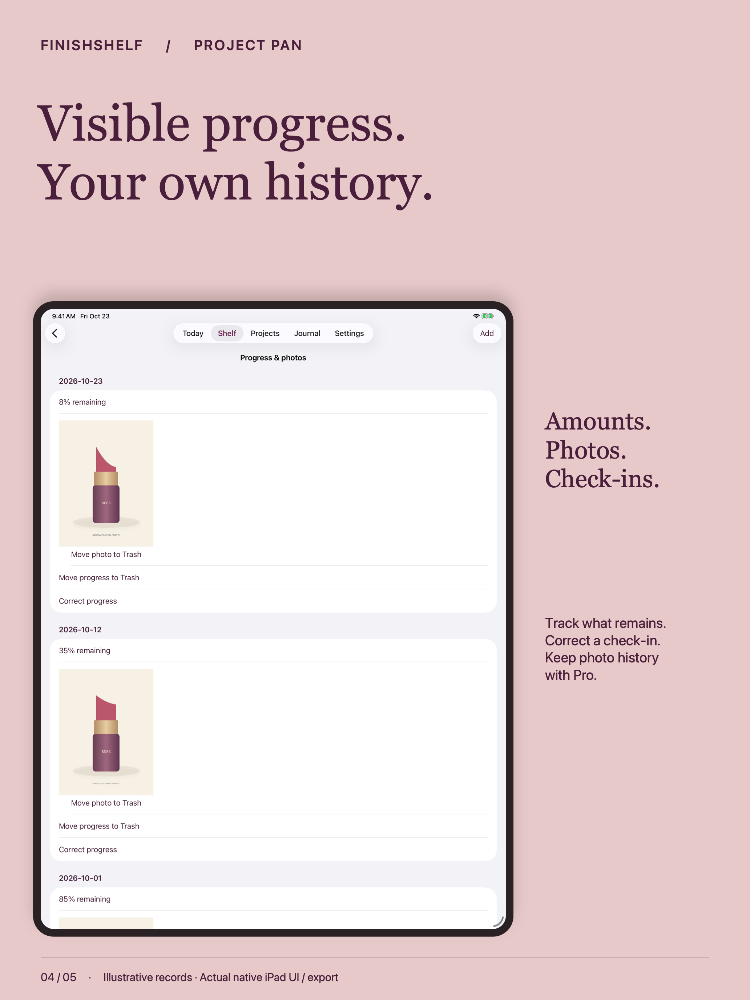
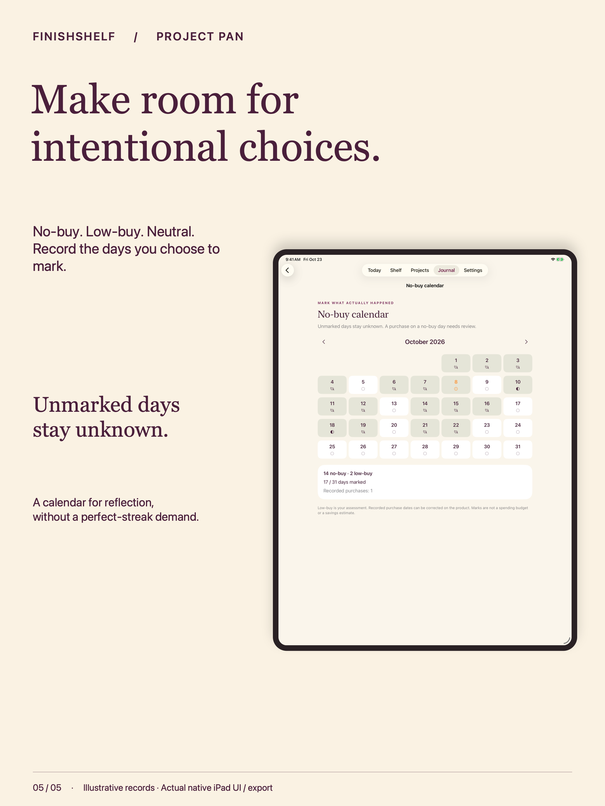
Useful from the first use
When your shelf grows
Localized prices appear in Apple’s purchase sheet. No physical product is sold in the app.
Your shelf stays yours
No developer collection, ads, analytics, tracking, cloud account or shopping feed. Camera and photo choices stay local. Reminders are optional and generic. You choose where exports go.
Dates are reminders to review your own product label and condition. FinishShelf does not assess product safety or give medical advice. Cost per use reflects your records; it is not a savings claim.
Read the privacy policy · Backup and recovery guide